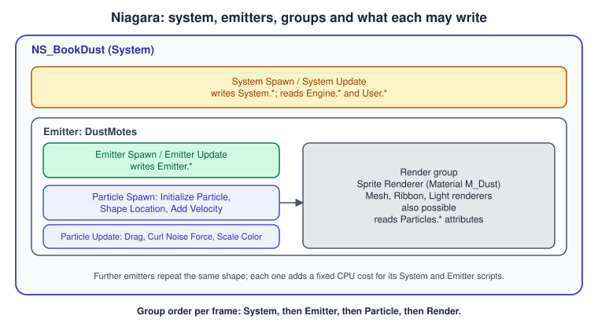
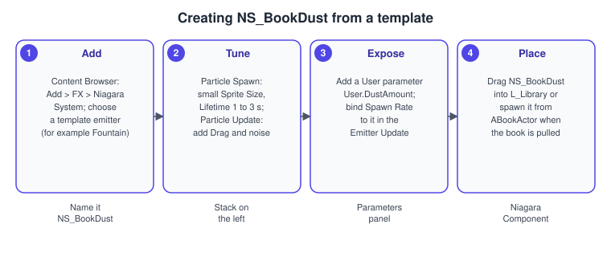
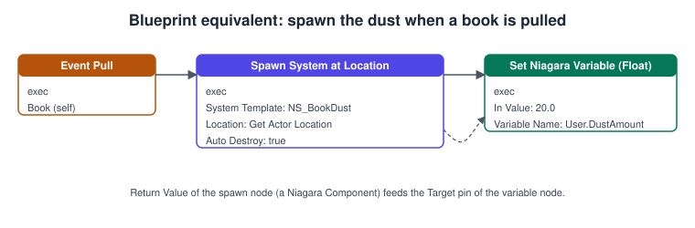

Niagara VFX
|
This content was generated with the assistance of AI and should be verified against the official documentation before being relied on in production. |
Niagara is the visual effects system of Unreal Engine 5. It draws everything that is made of many small moving things: dust, sparks, smoke, rain, ribbons, light flickers, and meshes that swarm. The Bookshelf uses it for NS_BookDust, a small puff of dust motes that appears when a book is pulled from the shelf. Niagara replaced the older Cascade particle system, and in UE5 it is the only one you should start new work in.
The facts on this page were checked in November 2026 against the Unreal Engine 5.8 documentation (released 2026-06-17, latest hotfix found 5.8.4). Niagara is a plugin that is enabled by default, and it runs on every platform Unreal Engine targets, with the GPU features limited by the graphics API of the device. The engine-neutral theory of particles and blending is in Transparency, Blending and Post-Processing; Unity’s counterpart is described in Particles and VFX Graph. The dust effect uses the Bookshelf classes introduced in Actors and Components and the material workflow from Materials and the Material Editor.
The model: systems, emitters and modules

Niagara has three levels of asset, each a container of the next:
-
Modules are the building blocks. A module is a small graph, written visually or in HLSL in the Script Editor, that reads and writes parameters: set the lifetime, apply drag, add a force, scale the colour over life. Modules stack in a fixed order, and the order matters because each module sees what the previous ones wrote.
-
Emitters are stack-based containers of modules with one purpose, such as "dust motes" or "impact sparks". An emitter is reusable and can be overridden per system.
-
Systems are stack-based containers of emitters that are combined into one effect. A system is the asset you place in a level or spawn from code (
NS_BookDust). A system can also be driven by a Sequencer timeline. -
Items are the parts of a system or emitter that are not assets of their own: the system and emitter properties, and the renderers.
The parameter map is the particle payload: every attribute is optional, and you can add a parameter of any type to the particles, including structs, transform matrices and Booleans. This is the difference from Cascade, where the available attributes were a fixed list. Epic’s own description of the design is that Niagara combines the stack paradigm of Cascade (modular and readable) with the graph paradigm of Blueprints (fine control).
Groups and stages: when each module runs
Every module belongs to a group that decides when it runs and what it may touch. The groups run in a fixed order each frame: system modules first, then emitter modules per emitter, then particle modules per particle, then the render group describes how to draw the result.
Each group has two default stages: Spawn and Update. Spawn runs in the first frame in which the group exists (for particles, once for each newly created particle) and Update runs every frame in which the system, emitter or particle is active. Two advanced stages attach to that flow:
-
Event handlers run when one emitter raises an event (for example a particle collision) and another emitter handles it. The handler runs in the same frame when possible, after the originating event. Epic’s scalability advice is to avoid events where you can, because they add synchronisation.
-
Simulation Stages are an advanced GPU feature that runs several update stages in sequence over the same data, for example the iterations of a grid-based fluid solver. They exist only for GPU emitters.
Namespaces: what each group may read and write
Parameters live in namespaces and are named Namespace.Name, for example Emitter.Age or Particles.Position. The group that a module belongs to limits where it can write:
| Group | Writes to | Reads from |
|---|---|---|
System |
|
|
Emitter |
|
|
Particle |
|
|
The User namespace holds the user parameters, the values that code and Blueprints can set from outside; Engine holds read-only engine data such as the delta time and the owner’s transform. This split is what makes a Niagara effect cheap: a value that is the same for all particles is computed once in the emitter or system group, and per-particle work stays in the particle group (Epic’s best-practice heading for this is Moving Complex Operations up the Stack).
Renderers: how particles become pixels
The Render group holds renderers, which turn simulated particle data into something the GPU draws. An emitter can have several renderers reading the same particles.
| Renderer | Use |
|---|---|
Sprite Renderer |
Camera-facing or axis-aligned quads. The workhorse for dust, smoke and sparks. Uses a material with the Used with Niagara Sprites usage, which the editor sets for you. |
Mesh Renderer |
Draws a static mesh per particle: debris, flying pages, a swarm of books. Costs more per particle, so keep counts low. |
Ribbon Renderer |
A continuous strip through particles in order: trails, lightning, magic streaks. In UE5 the ribbon settings were merged into particle initialization, so a ribbon is mostly a renderer plus a ribbon ID attribute. |
Light Renderer |
A dynamic point light per particle or per emitter. Treat it as an expensive effect and cap the count. |
Component Renderer |
Spawns an engine component per particle for cases that need real components. It is the most expensive option. |
Materials for Niagara are ordinary materials (see Materials and the Material Editor); particles are usually translucent or additive, which also means they are not Nanite geometry (see Nanite and Virtual Geometry).
CPU or GPU simulation
An emitter’s Sim Target in its Emitter Properties chooses where the particle simulation runs: CPUSim or GPUComputeSim. Two things are easy to misunderstand.
-
Only particle scripts move. Changing the Sim Target changes where the scripts in Particle Spawn, Particle Update and Simulation Stages run. The system and emitter scripts always run on the CPU, even for a GPU emitter, so every emitter has a fixed CPU cost whatever its target.
-
Bounds. A GPU simulation cannot tell the CPU how large the effect is, so the editor asks you to enable Fixed Bounds (minimum and maximum X, Y and Z) in the emitter, or at the system level in System Properties. Fixed bounds are also cheaper than dynamic bounds, except for effects that travel far.
As a guide, GPU simulation wins for large particle counts (tens of thousands and up), and a CPU simulation is better for emitters with only a handful of particles, because GPU resources cannot be divided as finely. The dust effect below has a few dozen particles, so it stays on the CPU. CPU particles can read the scene through data interfaces (collision queries, skeletal mesh sampling); GPU particles can read the depth buffer and distance fields for collision, which is the usual way to make GPU sparks bounce off the floor.
Procedure: build NS_BookDust

-
In the Content Browser use Add > FX > Niagara System and choose a template emitter (the Fountain template is a good start for a puff). Name the asset
NS_BookDust. -
In the Particle Spawn group set a small Sprite Size and a Lifetime of one to three seconds in Initialize Particle; in Particle Update add Drag and a gentle noise force so the motes drift.
-
Add a user parameter: in the Parameters panel add
User.DustAmount(float). In Emitter Update, bind the Spawn Burst Instantaneous count (or Spawn Rate) to it by linking the input to the parameter. -
Assign a soft translucent material to the Sprite Renderer (a material instance of a simple particle material) and check Fixed Bounds in the emitter properties so the effect does not need per-frame bounds calculation.
-
Drag
NS_BookDustintoL_Libraryto preview it, or spawn it from code as shown below. Use the Niagara Debugger and Debug Drawing tools to inspect running systems.
Complete example: dust when a book is pulled
The Bookshelf’s ABookActor holds a UNiagaraSystem asset reference, set in the Blueprint subclass BP_Book to NS_BookDust, and spawns it at the book’s location when it is pulled. First, the module’s Build.cs needs the Niagara module (see Project Structure and Modules):
// Bookshelf.Build.cs
using UnrealBuildTool;
public class Bookshelf : ModuleRules
{
public Bookshelf(ReadOnlyTargetRules Target) : base(Target)
{
PCHUsage = PCHUsageMode.UseExplicitOrSharedPCHs;
PublicDependencyModuleNames.AddRange(new string[]
{
"Core", "CoreUObject", "Engine", "InputCore", "EnhancedInput", "Niagara"
});
}
}// BookActor.h
#pragma once
#include "CoreMinimal.h"
#include "GameFramework/Actor.h"
#include "BookActor.generated.h"
class UNiagaraSystem;
class UStaticMeshComponent;
UCLASS()
class BOOKSHELF_API ABookActor : public AActor
{
GENERATED_BODY()
public:
ABookActor();
/** Called when the player pulls the book from the shelf. Spawns the dust effect. */
UFUNCTION(BlueprintCallable, Category = "Book")
void Pull();
protected:
UPROPERTY(VisibleAnywhere, BlueprintReadOnly, Category = "Book")
TObjectPtr<UStaticMeshComponent> Mesh;
/** The effect to play; assign NS_BookDust in BP_Book. */
UPROPERTY(EditDefaultsOnly, BlueprintReadOnly, Category = "Book|Effects")
TObjectPtr<UNiagaraSystem> DustSystem;
/** Value written to the user parameter User.DustAmount. */
UPROPERTY(EditDefaultsOnly, BlueprintReadOnly, Category = "Book|Effects", meta = (ClampMin = "0.0"))
float DustAmount = 20.0f;
};// BookActor.cpp
#include "BookActor.h"
#include "Components/StaticMeshComponent.h"
#include "NiagaraComponent.h"
#include "NiagaraFunctionLibrary.h"
#include "NiagaraSystem.h"
DECLARE_LOG_CATEGORY_EXTERN(LogBookshelf, Log, All);
ABookActor::ABookActor()
{
PrimaryActorTick.bCanEverTick = false;
Mesh = CreateDefaultSubobject<UStaticMeshComponent>(TEXT("Mesh"));
SetRootComponent(Mesh);
}
void ABookActor::Pull()
{
if (DustSystem == nullptr)
{
UE_LOG(LogBookshelf, Warning, TEXT("%s has no DustSystem assigned."), *GetName());
return;
}
// Fire-and-forget: with bAutoDestroy true the component is destroyed when the system finishes.
UNiagaraComponent* Dust = UNiagaraFunctionLibrary::SpawnSystemAtLocation(
this, DustSystem, GetActorLocation(), GetActorRotation(), FVector::OneVector,
/*bAutoDestroy*/ true, /*bAutoActivate*/ true);
if (Dust != nullptr)
{
Dust->SetFloatParameter(TEXT("User.DustAmount"), DustAmount);
}
}Source: UNiagaraFunctionLibrary API reference, UNiagaraComponent API reference and Creating Visual Effects in Niagara for Unreal Engine
SpawnSystemAtLocation is a fire-and-forget spawn: the returned component is a pooled-or-destroyed-on-finish helper, so do not keep the pointer after the frame. For an effect that belongs to an actor and plays repeatedly (a lamp glow, a book’s persistent sparkle) create a UNiagaraComponent as a default subobject, attach it, and call Activate and Deactivate. The Blueprint equivalent of Pull is the node graph below: an Event Pull, a Spawn System at Location node and a Set Niagara Variable (Float) node whose target is the spawn node’s return value.

The user parameter name in the variable node must match the name in the system exactly, including the User. prefix. A mistyped name is silently ignored: the effect plays with its default value.
Scalability: Effect Types and quality levels
Niagara is built to scale the same effect across hardware. Epic’s best-practice page recommends setting up a small number of reusable Effect Type assets and assigning one to every Niagara system. An Effect Type carries the scalability rules (culling by distance and visibility, instance counts, how to react when over budget), and the system, emitter and renderer can each override the quality-level settings, which follow the project scalability levels (for example Medium, High and Epic). Scalability can be set per platform, so a level can mean something different on Android than on Windows (see Android and Mobile).
Related console variables named in the guide include fx.Niagara.EmitterBounds.DynamicSnapValue, fx.Niagara.EmitterBounds.DynamicExpandMultiplier, fx.Niagara.EmitterBounds.FixedExpandMultiplier, Niagara.GPUSorting.CPUToGPUThreshold and Niagara.GPUCulling.CPUToGPUThreshold.
Migrating from Cascade
Cascade is deprecated in Unreal Engine 5 and Niagara replaces it; Epic’s migration guide lists this among the UE4 to UE5 replacements, together with Matinee to Sequencer and PhysX to Chaos. To move existing effects:
-
Enable the Cascade to Niagara Converter plugin, then right-click a Cascade particle asset in the Content Browser and choose Convert to Niagara System. The new system is created next to the source with the suffix
_Converted. -
Read the Niagara log of the new system: modules and renderers that could not be converted are listed there. Treat the result as a starting point, not a finished asset.
-
Rebuild by hand what did not convert, and consolidate. In Cascade it was natural to add an emitter for every visual element; in Niagara every emitter has fixed overhead, and Epic recommends building systems from a few existing emitters or emitter templates.
-
Cascade Shape modules convert to the Niagara Shape Location module, and the old ribbon behaviour lives in Initialize Particle.
Common mistakes
-
One emitter per visual element. Each emitter has a fixed CPU cost. Merge emitters that differ only in a parameter.
-
Choosing GPU for small effects. A GPU emitter with 20 particles is slower and more complicated than a CPU emitter. Use GPU for large counts.
-
Forgetting Fixed Bounds on a GPU emitter. The editor warns; without bounds the effect may be culled when its origin leaves the screen.
-
Mistyped user parameter names.
User.DustAmountandUser.Dustamountare different, and the failure is silent. -
Keeping the pointer from
SpawnSystemAtLocation. The component can be destroyed when the effect finishes; use an owned component for long-lived effects. -
Per-particle work in the wrong group. Anything that does not vary per particle belongs in Emitter or System groups.
-
Using events everywhere. Events add synchronisation; Epic’s guide lists Avoid Events.
-
Large bursts in one frame. A single spawn of tens of thousands of particles causes a hitch; spread bursts or use a GPU emitter.
-
Translucent overdraw. Big sprites close to the camera cost fill rate, the same cost as any translucent surface.
-
Expecting Cascade assets to run unchanged. Convert and review them.
Performance notes
-
Measure with the Niagara Debugger (live simulation cost) and with
stat niagaraand the GPU profiler (see Profiling and Optimization). -
Keep particle counts low and sprites small; reduce overdraw with tighter sprite shapes (a cutout of the sprite polygon is available in the sprite renderer).
-
Prefer Fixed Bounds; dynamic bounds make the engine compute the extents every frame.
-
Warm up only when the effect needs to be visible in its steady state at spawn, because warmup simulates ahead.
-
Assign an Effect Type to every system and set distance and visibility culling there, instead of tuning each system by hand.
-
Read the Mesh Asset Hygiene section of Epic’s best-practice guide before using mesh renderers or sampling meshes: large meshes are costly per particle.
-
Sorting has a cost; sort only emitters whose translucent particles overlap visibly. The
Niagara.GPUSorting.CPUToGPUThresholdvariable moves large sorts to the GPU.
What changed recently
| Version | Change |
|---|---|
UE 4.x to UE5 |
Niagara becomes the default effects system; Cascade is deprecated and the converter plugin is provided. |
UE 5.0 |
The Cascade to Niagara converter ships with the engine; Cascade Shape modules map to the Niagara Shape Location module and ribbons merge into Initialize Particle. |
UE 5.8 |
The 5.8 release notes pages read for this article describe no change to the core model of systems, emitters and modules. Check the release notes of your hotfix for module-level items. |
Where the books are outdated
The book Unreal Engine: Game Development from A to Z by Joanna Lee, John P. Doran and Nitish Misra (a Packt learning path that targets UE 4.7 to 4.10) covers particles in its module 1, chapter 6 with Cascade. Cascade is deprecated in UE5, and the book’s particle workflow maps to Niagara as follows:
| In the book | In UE 5.8 |
|---|---|
Cascade particle systems made of emitters with required, spawn and update modules |
A Niagara system of emitters whose modules sit in Spawn and Update stages of the Emitter and Particle groups. |
Fixed attribute list per particle |
An open parameter map: add any attribute you need. |
CPU-only particles, GPU particles as a special emitter type |
A Sim Target choice of CPUSim or GPUComputeSim per emitter. |
UE4-era effects triggered from Matinee tracks or Blueprint |
Place the system, or spawn it from code or Blueprint, or drive it from Sequencer (see Sequencer Cinematics). |
See also
-
Materials and the Material Editor: particle materials and instances.
-
Rendering Overview: where translucency is drawn in the frame.
-
Lighting, Lumen and MegaLights: lit translucency and the Light Renderer.
-
Actors and Components: owning a Niagara Component on an actor.
-
C++ and Blueprints Together: exposing
Pullto Blueprint. -
Profiling and Optimization: GPU profiling and
statcommands. -
Transparency, Blending and Post-Processing: the blend modes behind particle sprites.
-
Particles and VFX Graph: Unity’s equivalent.